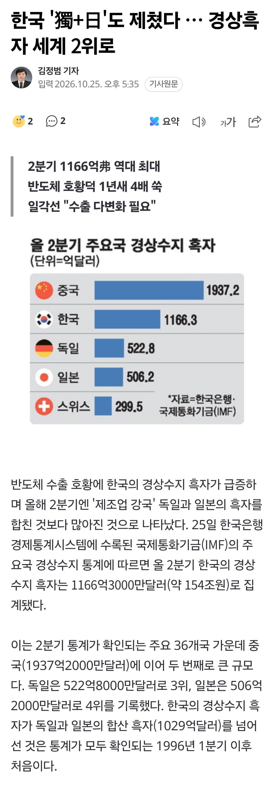

https://n.news.naver.com/mnews/article/009/0005753691
경상수지 흑자
한국 1166억 달러 > 독일 523억 달러 +일본 506억 달러 = 1029억 달러

https://n.news.naver.com/mnews/article/009/0005753691
경상수지 흑자
한국 1166억 달러 > 독일 523억 달러 +일본 506억 달러 = 1029억 달러
아니 근데 이게 큰 의미가 있나. 경상수지 흑자치만 보면 말레이시아가 미국보다 크고 베트남이 영국보다 큰데
저 돈들이 결국 부동산으로 갈거자나
당연히 삼성, 하닉, 반도체 관련 업종이 아닌 사람들 한텐 아무것도 없지 뭘 바래 ㅋㅋ
올 초인가? 초과수익 나누자 어쩌자 얘기 나오자 마자 아주 그냥 거품물고 공산당이냐 뭐냐하면 비난하더만 ㅋㅋㅋ 그냥 그들만의 돈잔치인거지
댓글중에 뭐? 1~2년뒤엔 현실경기가 좋아져?
개뿔 웃기고 있네 ㅋㅋ 그들이 몇십억씩 성과급 받은걸로 뭘 살것 같냐?
부동산이랑 물가만 더올라갈거다 ㅋㅋ
믿기지 않지만 3분기는 저기에 일본 하나 더 합친 수준이라는데 무섭네